Chapter 2. 머신러닝의 기초(Basic of MachineLearning)¶
1절. 머신러닝
2절. 지도 학습과 비지도 학습
3절. 모델 및 평가
4절. 교차 검증
5절. 데이터 세트(iris)
6절. 데이터 세트(MNIST)
7절. 모델 평가 방법과 정확도
8절. 머신러닝 응용 및 실용
9절. 과제 해결
1절. 머신러닝¶
전통적인 프로그래밍과 머신러닝¶
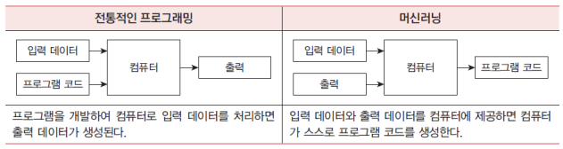
| 종류 | 입력값 |
|---|---|
| 전통적인 프로그래밍 | 데이터, 코드 |
| 머신러닝 | 데이터, 출력값 |
머신러닝¶
- 입력을 받아 출력하는 함수 \(y = f(x)\)의 학습(함수 근사)
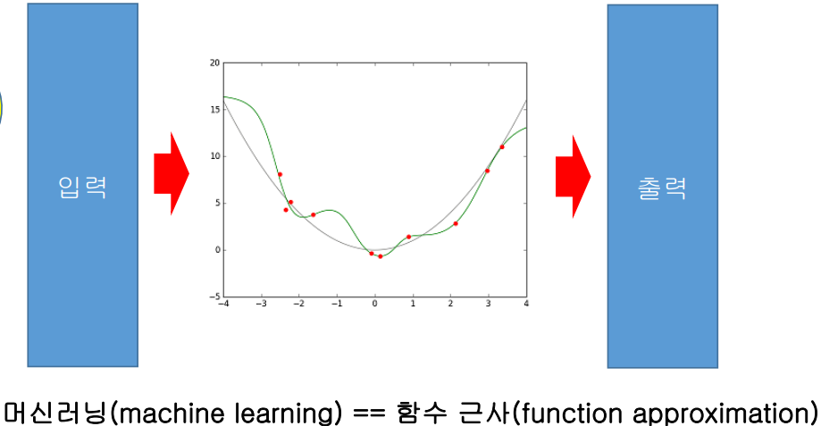
- 종류


2절. 지도 학습과 비지도 학습¶
지도 학습의 종류¶

회귀(Regression)¶
- 주어진 입력-출력 쌍을 학습
- 학습 후 새로운 입력값에 합리적인 출력값 예측
- 즉, 입력(\(x\))과 출력(\(y\))이 주어질 경우 입력에서 출력으로의 매핑 함수를 학습하는 것
- \(y = f(x)\)
- 입력, 출력이 모두 실수
- ex)
- "사용자가 이 광고를 클릭할 확률은?"
- "면적에 따른 각 아파트의 가격은?"

분류(Classification)¶
- 앞의 회귀에서 나왔던 공식 \(y = f(x)\)에서 출력 \(y\)가 이산적(discrete)인 경우 분류 문제(또는 인식 문제)
- 입력을 2개 이상의 클래스(부류)로 분류
- ex)
- 사진을 보고 "강아지"클래스나 "고양이"클래스로 분류하는 것
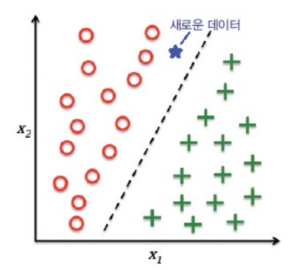
- 크기, 색상, 모양의 정보만 가지고 과일 이름으로 분류하는 예시

- 분류를 수행하기 위한 일반적인 알고리즘
- 신경망
- KNN(K-Nearest Neighbor)
- SVM(Support Vector Machine)
- 의사 결정 트리
비지도 학습¶
- "교사"없이 컴퓨터가 스스로 입력들을 분류
- \(y = f(x)\)에서 레이블 \(y\)가 주어지지 않음
- 데이터들의 상관도를 분석하여 유사한 데이터 결집

3절. 모델 및 평가¶
머신 러닝의 과정¶

모델 평가¶
- 머신 러닝의 모델
- 음료수를 판별하는 시스템을 만들어 달라는 요청을 받았을 경우
- 시스템이 "모델(model)"
- 모델은 "학습(train)"의 과정을 통해 생성

- 머신 러닝의 특징
- 색상(파장)과 산성도(실수)의 두 가지를 선택해야 하는 경우
- 두 가지 요소만으로 구별할 수 있기를 희망하는 "특징(feature)"
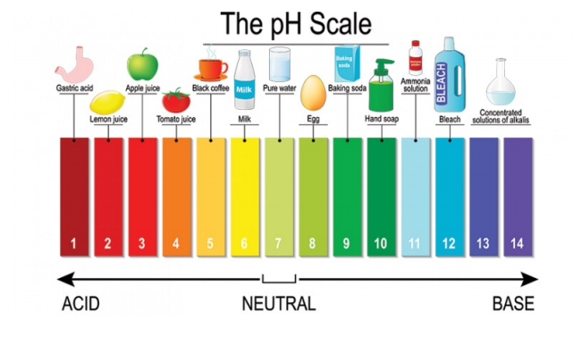
- 데이터 수집을 통한 특징 비교
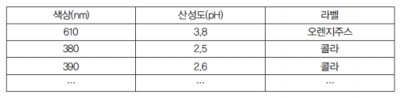
훈련 데이터, 테스트 데이터¶
- 머신 러닝에는 항상 훈련 데이터와 테스트 데이터 존재

- 훈련 데이터 구조
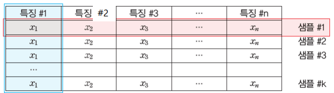
- 훈련 단계와 테스트 단계 존재
훈련 단계¶
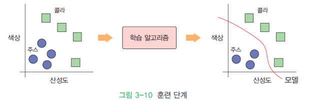
테스트 단계¶

모델 선택¶
- 머신러닝의 모델 선택
- 특징(Feature)의 개수에 따라 여러 타입 모델 존재
선형 모델¶

학습¶
- 가중치\((W)\)와 \(y\)절편\((b)\)을 임의의 값으로 초기화한 후 출력 예측
- 출력값의 정확한 값과 비교 후 더 정확한 예측을 갖도록 \(W\) 및 \(b\)의 값 조정

평가¶
- 학습이 완료되면 모델을 평가 후 모델의 정확도 판단
- 테스트 데이터 사용
- 일반적인 훈련 데이터와 테스트 데이터의 비율
- 80 : 20
- 70 : 30
4절. 교차 검증¶
교차 검증(Cross Validation)¶
- 교차 검증 과정

사전 데이터 셋 분류¶
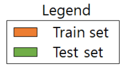
홀드아웃 방법(Holdout Method)¶
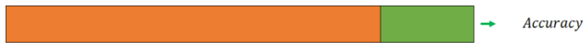
K-겹 교차 검증(K-Fold Cross Validation)¶

리브-P-아웃 교차 검증(Leave-P-Out Cross Validation)¶
- 전체 데이터(서로 다른 데이터 샘플들) 중 P개의 샘플을 선택하여 그것을 모델 검증에 사용하는 방법

리브-원-아웃 교차 검증(Leave-One-Out Cross Validation)¶
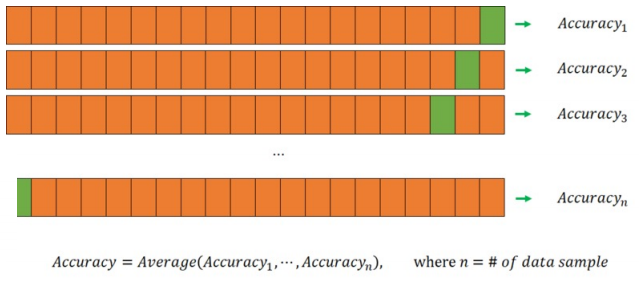
5절. 데이터 세트(iris)¶
예측¶
- 머신러닝 시스템은 사용자의 질문에 대답
- 예시
- 색상이 600nm, 산성도가 1.5인 음료가 무엇인지 머신러닝 시스템에 질문
- 훈련된 결과를 바탕으로 색상 및 산성도를 고려하여 음료를 예측

기본적인 데이터 세트¶
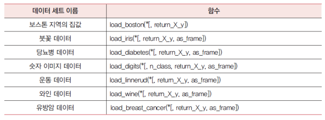
붓꽃 데이터 세트¶
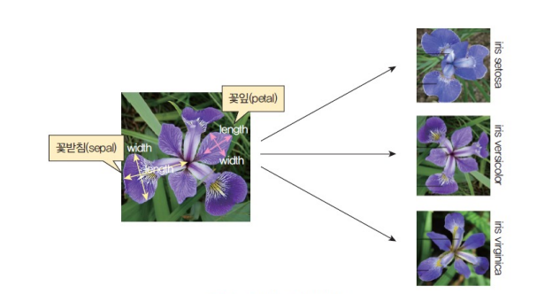
- 특징과 레이블의 구조
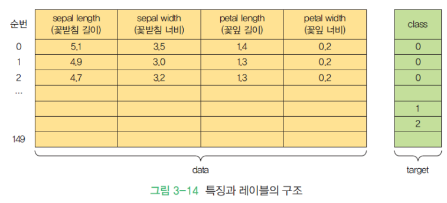
from sklearn import datasets
iris = datasets.load_iris()
print(iris)
# {'data': array([[5.1, 3.5, 1.4, 0.2],
# [4.9, 3. , 1.4, 0.2],
# [4.7, 3.2, 1.3, 0.2],
# [4.6, 3.1, 1.5, 0.2],
# ...
# [5.9, 3. , 5.1, 1.8]]),
# 'target' : array([0, 0, 0, 0, 0, 0, 0, 0, 0, 0, 0, 0, 0, 0, 0, 0, 0,
# ..., 0])
- 훈련 데이터와 테스트 데이터 분리
from sklearn.model_selection import train_test_split
X = iris.data
y = iris.target
# (80 : 20)으로 분할
X_train, X_test, y_Train, y_test = train_test_split(X, y, test_size = 0.2, random_state = 4)
print(X_train.shape)
print(X_test.shape)
# (120, 4)
# (30, 4)
- 붗꽃 데이터 실습 결과
from sklearn.datasets import load_iris
from sklearn.linear_model import Perceptron
import numpy as np
import matplotlib.pyplot as plt
iris = load_iris()
print(iris.feature_names)
print(iris.target_names)
# ['sepal length (cm)', 'sepal width (cm)', 'petal length (cm)', 'petal width (cm)']
# ['setosa' 'versicolor' 'virginica']
X, y = iris.data, iris.target

모델 선택¶
- K-Nearest Neighbor(KNN) 알고리즘은 모든 머신러닝 알고리즘 중에서도 가장 간단하고 이해하기 쉬운 분류 알고리즘
- KNN은 학습 시에 교사가 존재하는 "지도 학습"

- 학습
from sklearn.neighbors import KNeighborsClassifier
knn = KNeighborsClassifier(n_neighbors = 6)
knn.fit(X_train, y_train)
- 평가
from sklearn.neighbors import KNeighborsClassifier
from sklearn import metrics
y_pred = knn.predict(X_train)
scores = metrics.accuracy_score(y_test, y_pred)
# 0.9666666666666666667
- 예측
from sklearn.neighbors import KNeighborsClassifier
from sklearn import metrics
classes = {0 : 'setosa', 1 : 'versicolor', 2 : 'virginica'}
# 전혀 보지 못한 새로운 데이터 제시
x_new = [[3, 4, 5, 2], [5, 4, 2, 2]]
y_predict = knn.predict(x_new)
print(classes[y_predict[0]])
print(classes[y_predict[1]])
# versicolor
# setosa
- 모델 - perceptron
from sklearn.datasets import load_iris
from sklearn.linear_model import Perceptron
import numpy as np
import matplotlib as mpl
import matplotlib.pyplot as plt
iris = load_iris()
idx = np.in1d(iris.target, [0, 2])
X = iris.data[idx, :2]
y = (iris.target[idx] / 2).astype(np.int)
model = Perceptron(max_iter=300, shuffle=False, tol=0, n_iter_no_change=1e9).fit(X, y)
XX_min = X[:, 0].min() - 1
XX_max = X[:, 0].max() + 1
YY_min = X[:, 1].min() - 1
YY_max = X[:, 1].max() + 1
XX, YY = np.meshgrid(np.linspace(XX_min, XX_max, 1000),
np.linspace(YY_min, YY_max, 1000))
ZZ = model.predict(np.c_[XX.ravel(), YY.ravel()]).reshape(XX.shape)
plt.contourf(XX, YY, ZZ, cmap=mpl.cm.autumn)
plt.scatter(X[y == 0, 0], X[y == 0, 1], c='w', s=100, marker='o', edgecolor='k')
plt.scatter(X[y == 1, 0], X[y == 1, 1], c='k', s=100, marker='x', edgecolor='k')
plt.xlabel("꽃받침의 길이")
plt.ylabel("꽃받침의 폭")
plt.title("붓꽃 데이터(setosa/virginica)")
plt.xlim(XX_min, XX_max)
plt.ylim(YY_min, YY_max)
plt.grid(False)
plt.show()

6절. 데이터 세트(MNIST)¶
필기체 숫자 분류¶
- MNIST가 배포하는 필기체 숫자 이미지
-
sklearn을 사용하여 필기체 숫자 이미지 인식 프로그램 실행
-
데이터 세트 읽기
import matplotlib.pyplot as plt
from sklearn import datasets, metrics
from sklearn.model_selection import train_test_split
digits = datasets.load_digits()
plt.imshow(digits.images[0], cmap = plt.cm.gray_r, interpolation = 'nearest')

- 이미지 평탄화

- 훈련 데이터와 테스트 데이터
- 모델과 학습
from sklearn.neighbors import KNeighborsClassifier
knn = KNeighborsClassifier(n_neighbors = 6)
knn.fit(X_train, y_train)

- 예측
# 테스트 데이터 예측
y_pred = knn.predict(X_test)
# 정확도 계산
scores = metrics.accuracy_score(y_test, y_pred)
print(scores)
# 0.95328142338042269
# 이미지 출력을 위한 평탄화된 이미지를 다시 8 * 8 형상으로 변환
plt.imshow(X_test[10].reshape(8, 8), cmap = plt.cm.gray_r, interpolation = 'nearest')
y_pred = knn.predict([X_test[10]])
# 입력은 항상 2차원 행렬 : why? 8 * 8의 격자 형태이기 때문
print(y_pred)
# [3]
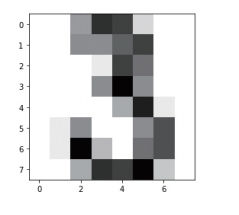
7절. 모델 평가 방법과 정확도¶
머신러닝 알고리즘의 성능 평가¶
- 정확도
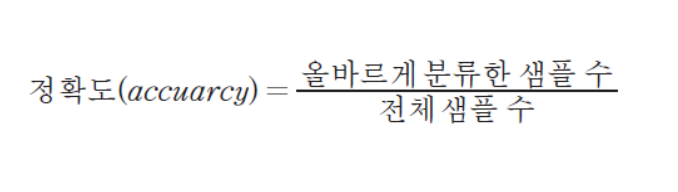
- 혼동행렬

정확도(Accuracy)¶
- 불균형(Imbalanced)한 데이터에서는 Accuracy를 사용할 경우 잘못된 성능 예측 결과가 생길 가능성 존재
- 모델 성능 평가
- Accuracy, Percision, Recall과 이를 이용한 F1 Score 등을 주로 사용
혼동 행렬(Confusion Matrix)¶
- 앞에 True가 붙을 경우 예측과 실제가 동일
- 앞에 False가 붙을 경우 예측과 실제가 상이
| 긍정 OR 부정 | 명칭 | 내용 |
|---|---|---|
| 긍정 | TP(True Positive) | 긍정을 긍정으로 올바르게 예측한 경우 |
| 긍정 | FN(False Negative) | 긍정을 부정으로 잘못 예측한 경우 |
| 부정 | FP(False Positive) | 부정을 긍정으로 잘못 예측한 경우 |
| 부정 | TN(True Nagative) | 부정을 부정으로 올바르게 예측한 경우 |
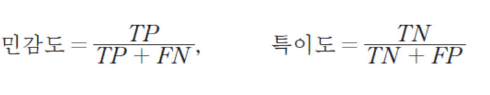

- Accuracy(정확성) = (TP + TN) / (TP + FN + FP + TN)
- Precision(정밀도) = TP / TP + FP
- Sensitivity(민감도) = Recall = TP / TP + FN
- Specify(특이도) = TN / TN + FP
F1 score¶
- \(\frac{2 * Precision * Recall}{Precision + Recall}\)

ROC Curve¶

실습(1)¶
from sklearn.metrics import accuracy_score
from sklearn.metrics import confusion_matrix
label = [0, 0, 0, 0, 0, 0, 0, 0, 0, 0, 0, 1, 1, 1, 1, 2, 2, 2, 2]
predict = [0, 0, 0, 0, 0, 0, 0, 0, 0, 0, 0, 0, 0, 0, 1, 1, 2, 2, 0]
print(confusion_matrix(label, predict))
-
0번 클래스
-
11개 보유
- 0 - 11개
- 1 - 0개
- 2 - 0개
-
1번 클래스
-
4개 보유
- 0 - 3개
- 1 - 1개
- 2 - 0개
-
2번 클래스
- 4개 보유
- 0 - 1개
- 1 - 1개
- 2 - 2개
실습(2)¶
import seaborn as sns
label = [0, 0, 0, 0, 0, 0, 0, 0, 0, 0, 0, 1, 1, 1, 1, 2, 2, 2, 2]
predict = [0, 0, 0, 0, 0, 0, 0, 0, 0, 0, 0, 0, 0, 0, 1, 1, 2, 2, 0]
cmatrix = confusion_matrix(label, predict)
sns.set(rc = {'figure.figsize' : (6, 5)})
sns.heatmap(data = cmatrix, annot = True)
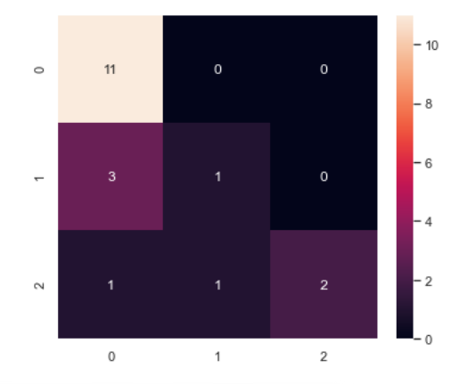
혼동 행렬 출력¶
import matplotlib.pyplot as plt
from sklearn.metrics import datasets, metrics
from sklearn.model_selection import train_test_split
digits = datasets.load_digits()
n_samples = len(digits.images)
data = digits.images.reshape((n_samples, -1))
from sklearn.neighbors import KNeighborsClassifier
knn = KNeighborsClassifier(n_neighbors = 6)
X_train, X_test, y_train, y_test = train_test_split(data, digits.target, test_size = 0.2)
knn.fit(X_train, y_train)
y_pred = knn.predict(X_test)
disp = metrics.plot_confusion_matrix(knn, X_test, y_test)
plt.show()

분류 리포트¶
- 사이킷런에서 사용
- 분류 리포트를 생성하는 기능
- 대표적인 성능 척도들 계산
- 변수나 수식의 값을 문자열로 통합

8절. 머신러닝 응용 및 실용¶
머신러닝 응용 분야¶
- 복잡한 데이터들이 존재하는 분야
- 데이터에 기반하여 결정을 내려야 하는 분야
- 구체적 응용 분야 예시
- 영상 인식, 음석 인식
- 프로그램으로 작성하기에 규칙과 공식이 너무 복잡한 경우
- 보안 시스템
- 침입을 탐지하거나 신용 카드 거래 기록에서 사기를 감지하는 경우
- 작업 규칙이 지속적으로 바뀌는 경우
- 주식 거래, 에너지 수요 예측, 쇼핑 추세 예측
- 데이터 특징이 지속적으로 변화하며 프로그램을 계속 변경해야 하는 상황인 경우
- 전자 메일 메시지
- 스팸인지 아닌지 판단하기 위한 경우
- 신용 카드 거래
- 허위인지 아닌지 판단하기 위한 경우
- 광고
- 구매자가 클릭할 확률이 높은 광고가 무엇인지 파악하기 위한 경우
머신러닝의 실용적 가치¶
- 프로그래밍 시간 단축 가능
- 맞춤형 제품의 쉬운 개발
- 프로그래머로 시도할 알고리즘이 떠오르지 않는 문제 해결 가능
데이터 라벨링(Data labeling)¶
- 주어진 데이터에 라벨을 붙이는 작업
- 데이터 라벨러라는 직업의 탄생
- 머신러닝 시스템이 강아지와 고양이를 구별시키는 경우
- 수천 장의 사진들 필요
- 각각 강아지와 고양이로 구분
- 사진에 라벨 필요
- AI가 라벨은 할 수 없기에 구분 작업은 사람의 도움 필요